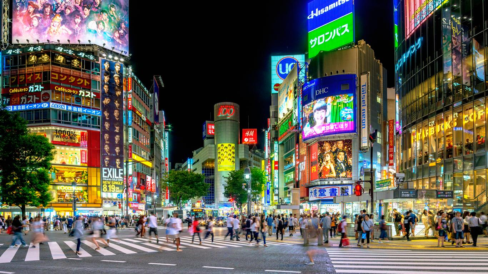

Ghibli Museum
A museum showcasing the work of the Japanese animation studio Studio Ghibli

Meguro River
Meguro River is very famous for its beautiful cherry blossoms during spring

Shibuya
center for youth fashion and culture, and its streets are the birthplace to many of Japan's fashion and entertainment trends